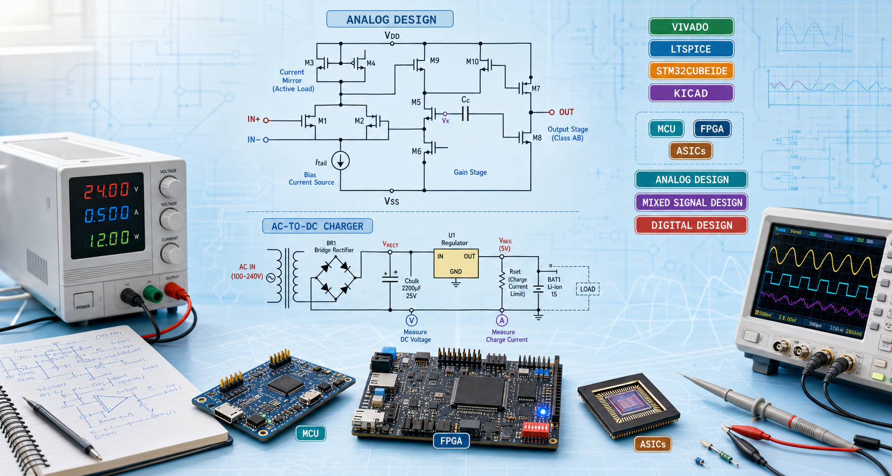

Problem and constraints
Each project begins with the design objective, constraints, technical tradeoffs, and success criteria.

Engineering portfolio
I design and document systems across analog circuits, embedded firmware, digital hardware, and software. This portfolio presents selected work, technical artifacts, and the engineering decisions behind each build.
Selected work
Engineering approach
Each project begins with the design objective, constraints, technical tradeoffs, and success criteria.
Repositories, schematics, diagrams, documents, test notes, and demonstrations are organized for review.
Results, lessons learned, and next design iterations show how each project developed technically.
Contact
Hardware and software engineer focused on analog design, mixed-signal systems, embedded platforms, and digital hardware.